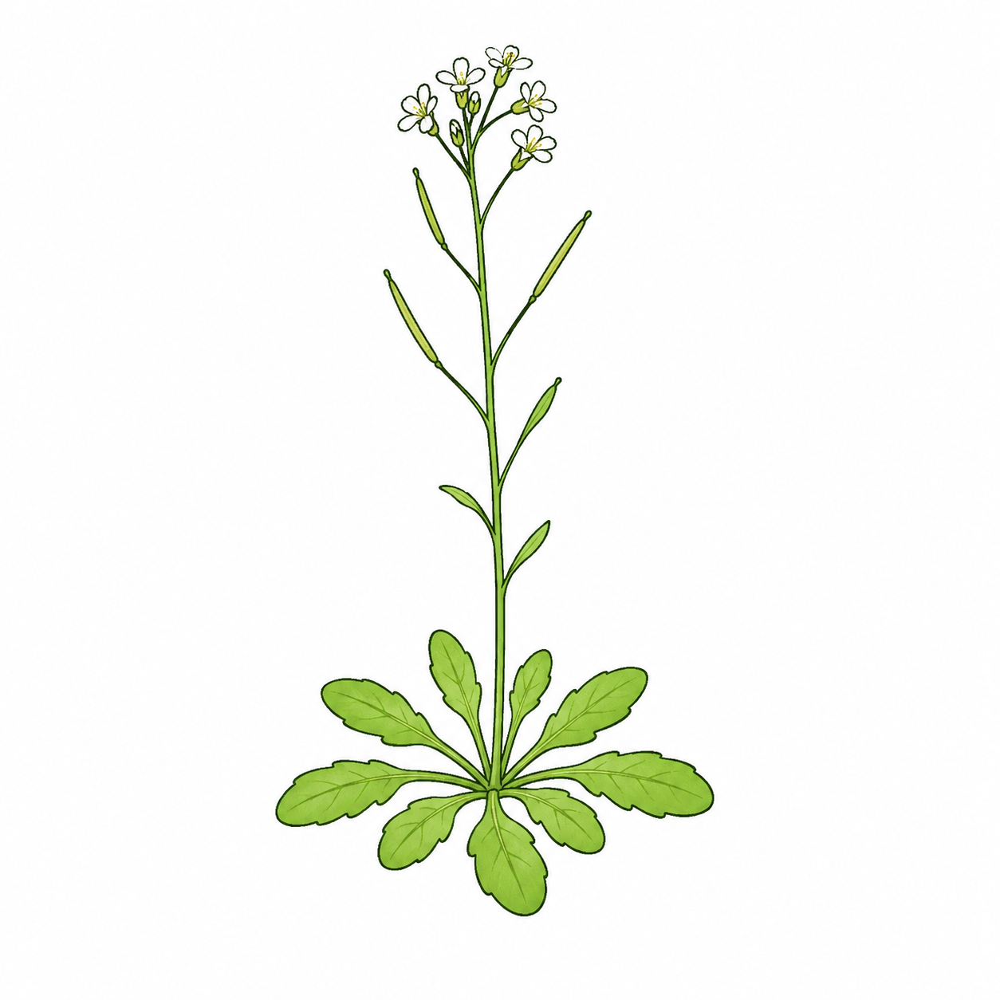
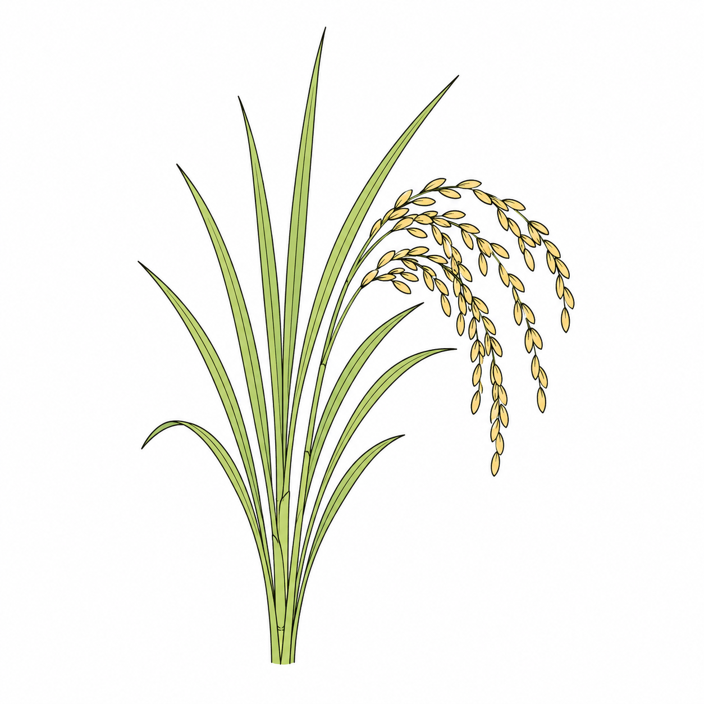
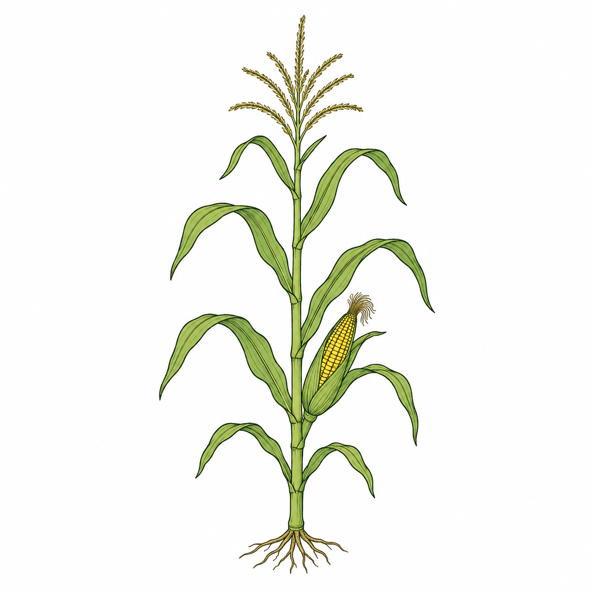
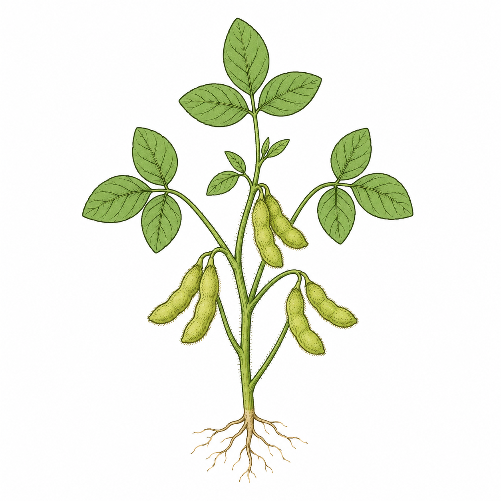

Arabidopsis thaliana
TAIR10 · Araport11
- Samples
- 146
- High-confidence IR
- 2,256
Species-specific high-confidence intron-retention (IR) priors for upstream processing with plantvelo.

TAIR10 · Araport11

IRGSP-1.0 · RAP-DB
SL4.0 · ITAG4.0

Zm-B73-REFERENCE-NAM-5.0 · Zm00001eb.1

Glycine_max_v2.1 · Wm82.a2.v1
| Species | Assembly | Assembly accession | Annotation |
|---|---|---|---|
| Arabidopsis thaliana | TAIR10 | GCA_000001735.1 | Araport11 |
| Oryza sativa Japonica | IRGSP-1.0 | GCA_001433935.1 | RAP-DB |
| Solanum lycopersicum | SL4.0 | GCA_000188115.5 | ITAG4.0 |
| Zea mays | Zm-B73-REFERENCE-NAM-5.0 | GCA_902167145.1 | Zm00001eb.1 |
| Glycine max | Glycine_max_v2.1 | GCA_000004515.4 | Wm82.a2.v1 |
Each download contains only high-confidence IR records for the selected species, with IR_class set to high_confidence_IR.
gene_id, intron_id, intron_uid, chromosome, start, end and strand.supporting_transcripts, anchor_count and exon_overlap_warning.N_retained, N_spliced, N_specific and N_informative.IR_ratio, IR_specificity, species and IR_class.Preserve the identifiers and coordinate fields when preparing inputs. Use the high-confidence IR resource matching your species, reference assembly and annotation, and refer to the upstream tool instructions for the expected input format.
Visit plantvelo for the upstream processing workflow. After generating the loom file, continue with Data Preparation to import the count layers into PlantVelocity.